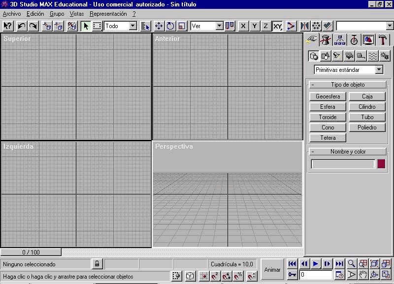

4.2. Animación y simulación por ordenador.
Los programas de animación y simulación están destinados a conseguir un efecto de movimiento en las figuras representadas.
Los programas de animación pretenden crear efectos únicamente artísticos y su movimiento es libre.
Por su parte, los programas de simulación tienen restricciones, ya que intentan imitar un movimiento real.
En el diseño de objetos se utilizan programas de simulación para conseguir realismo en las piezas diseñadas y para poder pasar esas mismas restricciones a los programas de ensayos virtuales.
Las funciones básicas de este tipo de programas son:
- Añadir texturas a las superficies creadas.
- Desarrollar entornos de iluminación.
- Simular movimientos de los objetos (desplazamientos, giros y deformaciones).
- Enfocar imágenes desde varios puntos.
AutoCAD realiza estas operaciones gracias a su función llamada render o renderizado, aunque no es su aplicación más destacada.
| Otros programas que realizan estas tareas específicamente son 3D Studio y Katia (simulación) o Fireworks (animación). | |
|  Pantalla de 3D Studio |
Ejemplo de gif animado creado con Fireworks |
Obra publicada con Licencia Creative Commons Reconocimiento 2.5